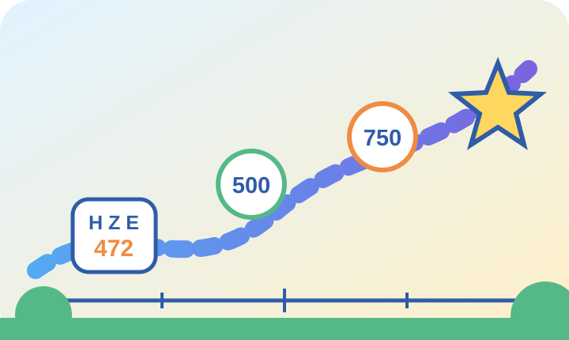

Lernpaket für Klasse 3
Zahlenraum bis 1.000
Entdecke mit Mila und Ben Hunderter, Zehner und Einer. Übe Zahlenstrahl, Nachbarzahlen, Vergleichen, Ordnen, Runden und Zahlenmuster in 35 Aufgaben.
🌟 Große Zahlen werden leicht, wenn du ihre Stellenwerte verstehst.